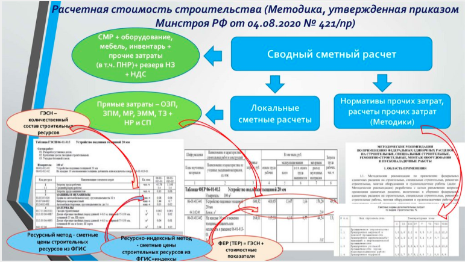
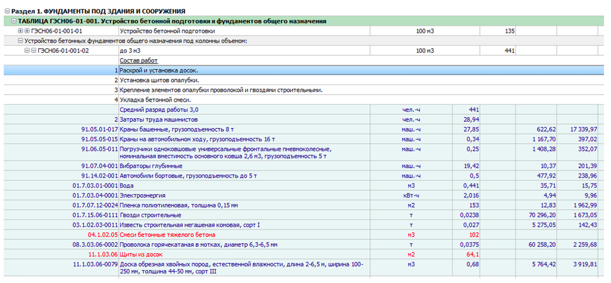
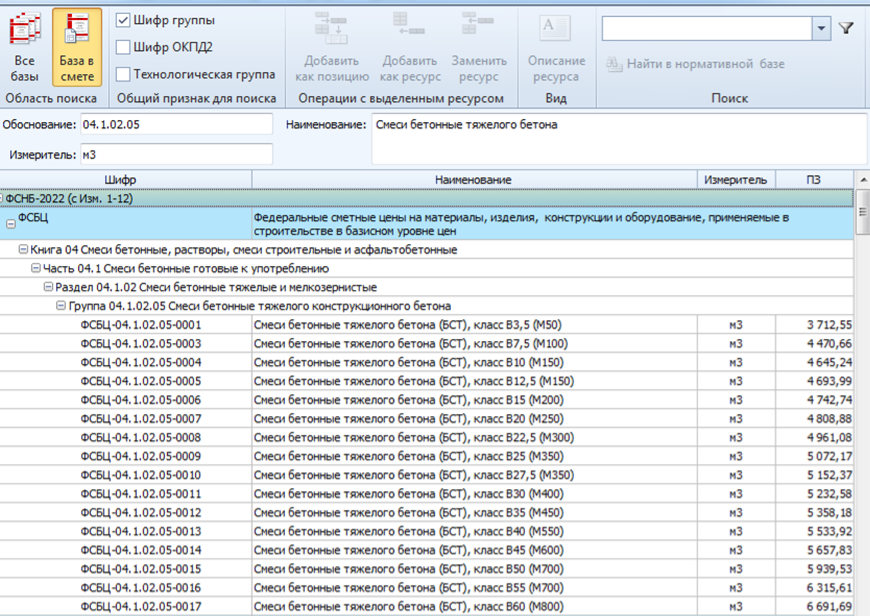

Учимся определять сметную стоимость строительства
Понимание сметных норм помогает заказчикам и подрядчикам решать спорные вопросы при приемке работ. В этом уроке мы на примерах объясним структуру сметной стоимости строительства, что поможет вам обеспечить достоверность расчетов и минимизировать риски перерасхода средств или недооценки необходимых затрат.

Структура сметной стоимости строительства
В структуру сметной стоимости строительства входят:
- стоимость строительных работ;
- стоимость ремонтно-строительных работ при капитальном ремонте;
- стоимость ремонтно-реставрационных работ при сохранении объектов культурного наследия;
- работ по монтажу и капитальному ремонту оборудования;
- стоимость оборудования;
- стоимость прочих затрат, в том числе пусконаладочных работ.

Стоимость строительно-монтажных работ и пусконаладочных работ включает:
- прямые затраты;
- накладные расходы и сметную прибыль;
- строительно-монтажные работы;
- другие затраты, которые учитываются в сметной документации.
Прямые затраты учитывают:
- сметную стоимость материалов, изделий, конструкций – материальные ресурсы;
- оплату труда рабочих, работников-исполнителей реставрационных работ, пусконаладочного персонала;
- стоимость эксплуатации машин и механизмов;
- оплату труда рабочих, управляющих машинами;
- стоимость перевозки и погрузочно-разгрузочных работ, которые не входят в стоимость материальных ресурсов.
Как определить сметную стоимость методами РИМ, РМ и БИМ
Сметную стоимость ресурсно-индексным (РИМ) или ресурсным методом (РМ) определяют с помощью сметных норм на:
- строительные работы (ГЭСН),
- ремонтно-строительные работы (ГЭСНр),
- монтаж оборудования (ГЭСНм),
- капитальный ремонт оборудования (ГЭСНмр),
- пусконаладочные работы (ГЭСНп),
- ремонтно-реставрационные работы (ГЭСНрр).
Сметную стоимость базисно-индексным методом (БИМ) определяют с использованием:
- федеральных единичных расценок (ФЕР);
- территориальных единичных расценок (ТЕР), которые разрабатываются на основе ГЭСН.
Возможность применять отраслевые элементные сметные нормы (ОЭСН) и единичные расценки (ОЕР) предусмотрели в Методике № 421/пр.
Сметные нормы разрабатывали по принципу усреднения и исходили из условий, в которых применяют прогрессивные и рациональные методы организации строительного производства с использованием современных строительных машин и механизмов, строительных материалов, изделий и конструкций (МР), которые обеспечивают безопасность и потребительские свойства строительной продукции.
Особенности применения сметных норм описали в положении Методики разработки таких норм (приказ Минстроя РФ от 18.07.2022 N 577/пр.). Знания сметных норм помогают заказчикам и подрядчикам решать спорные вопросы при приемке работ.
Рассмотрите пример таблицы сметных норм.

Когда разрабатывают сметные нормы
Сметные нормы разрабатывают в нормальных условиях при положительной температуре воздуха.
Когда определяют стоимость работ при осложненных факторах строительства и работе при отрицательных температурах воздуха, применяют соответствующие коэффициенты и нормативы затрат.
Сметные нормы разрабатывают по результатам хронометражных наблюдений, технического нормирования. В хронометраже учитывают нормируемые и ненормируемые затраты труда рабочих и машинистов.
Нормируемые затраты – это все перерывы: технологические, на отдых и личные надобности рабочих и машинистов.
Ненормируемые затраты – это несанкционированные перерывы, которые вызваны неправильной организацией работ и те, которые возникают по случайным причинам.
Состав таблицы ГЭСН
- наименование и технические характеристики (позволяют подобрать необходимую норму);
- состав работ (содержит полный перечень основных рабочих операций);
- измерители сметных норм (нужны для определения объема работ);
- затраты труда рабочих, средний разряд работы;
- показатели норм по элементам затрат: машинам и механизмам, материалам, изделиям и конструкциям.
Состав работ в ГЭСН не содержит перечень дополнительных работ и операций, которые включены в норму по умолчанию (Методика № 577/пр).
К таким работам относят:
- погрузка на приобъектном складе МР или оборудования;
- перемещение в зону производства работ;
- разгрузка и распаковка;
- заключительные работы.
Когда определяют время эксплуатации машин и механизмов, их простои учитывают как технологические перерывы, если их используют комплексно. Также в расчет времени эксплуатации машин и механизмов включают все затраты на перемещения при производстве работ.
Материальные ресурсы учитывают в сметной норме. Указывают тип, разновидность, класс или марку в соответствии с ФСБЦ.
Пример
Некоторые МР уже учтены в сметной норме с указанием кода:
08.3.03.06-0002 «Проволока горячекатаная в мотках, диаметр 6,3-6,5 мм».
Основные, ценообразующие МР указываются по номеру технологической группы:
04.1.02.05 «Смеси бетонные тяжелого бетона».
Учтенные МР в сметной норме заменять нельзя. Неучтенные можно выбрать из состава технологической группы в соответствии с проектными данными.

Особенности использования сметных норм прописали в технической части каждого сборника ГЭСН. Там уточняют:
- условия работ, которые учтены сметными нормами;
- перечень общих требований и положений;
- возможность замены строительных ресурсов;
- особенности расчета объемов работ и справочная информация.
Переходите в следующий урок, в котором мы подробно разберем, что учитывают прямые затраты и какие методики их определяют.